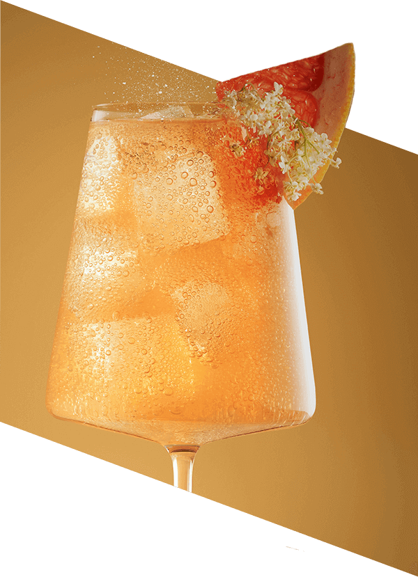

Grejpfrut & Kwiat Czarnego Bzu
Wyrafinowana kompozycja smaków rześkiego grejpfruta i romantycznych kwiatów czarnego bzu oczaruje Twoich gości
Stwórz niepowtarzalną atmosferę z nową linią bezalkoholowych baz do koktajli i moktajli SodaStream Crafted! Wyjątkowe połączenie grejpfruta i kwiatu czarnego bzu to esencja wyrafinowanego smaku i elegancji. Wystarczy dodać wodę gazowaną przygotowaną za pomocą Twojego saturatora SodaStream, aby przenieść się do świata wyjątkowych doznań i zachwycić bliskich unikalnymi napojami.
Perfekcyjne koktajle i moktajle na 1, 2, tssst!
Zanurz się w świecie kontrastów z bazą SodaStream Crafted Grejpfrut & Kwiat Czarnego Bzu! Mistrzowsko
połączone,
słodko-kwaśne nuty nadadzą charakteru Twoim koktajlom i moktajlom, którymi zachwycisz najbliższych oraz
gości.
Możesz samodzielnie zdecydować
o stopniu nasycenia bąbelkami
i wybrać poziom ich słodkości. Zacznij pełną świeżych bąbelków przygodę
z SodaStream i sprawdź jakie to wygodne.
Orzeźwiające
w dzień
wyrafinowane nocą!


Orzeźwiające za dnia
W ciągu dnia baza SodaStream Crafted Grejpfrut
& Kwiat Czarnego Bzu pozwoli Ci wyczarować wyśmienite moktajle, w tym niepowtarzalną lemoniadę
2.0, która
ugasi
pragnienie i orzeźwi Cię w upalne popołudnie. Stwórz napój idealny na chwile relaksu, codzienne
przyjemności
i spotkania z przyjaciółmi.
Porywające nocą
Nocą zmień zasady gry i bąbelkuj we własnym rytmie! Bazy SodaStream Crafted inspirują do musujących
eksperymentów.
Niezwykłe koktajle z dodatkiem alkoholu uświetnią specjalne okazje, imprezy z przyjaciółmi, uroczystą
kolację czy
romantyczną randkę.
Poczuj smak
w każdym bąbelku!

gazuj
miksuj
smakuj
Twój domowy bar
Tworzenie autorskich napojów z bazami SodaStream Crafted jest niezwykle łatwe. Wystarczy dodać do nich
wodę gazowaną
oraz opcjonalnie ulubione dodatki lub alkohol na specjalne okazje czy wieczorne spotkania. Nie musisz
poznawać tajników
sztuki barmańskiej, aby serwować mistrzowskie moktajle i koktajle. Teraz masz je na 1, 2, tssst!
Day

Przepis na dzień - Moktajl:
Blueberry Elderflower Fizz
Składniki:
- 70 ml bazy Grejpfrut & Kwiat Czarnego Bzu
- 20 ml wody gazowanej
- 10 ml soku jagodowego
- Kilka borówek
- Kostki lodu
- Dekoracja z kwiatów czarnego bzu i skórki limonki
Przygotowanie:
- W niskiej, pękatej szklance umieść borówki i kilka kostek lodu.
- Do szklanki dodaj mus jagodowy, sok z cytryny i bazę SodaStream Crafted Grejprut & Kwiat Czarnego Bzu.
- Uzupełnij wodą gazowaną.
- Delikatnie wymieszaj napój łyżką barmańską i udekoruj kwiatami czarnego bzu i skórką z limonki.
Night
Przepis na wieczór - Koktajl:
Elderflower Prosecco Spritz
Składniki:
- 70 ml bazy Grejpfrut & Kwiat Czarnego Bzu
- 70 ml Prosecco
- 20 ml soku z limonki
- 20 ml wody gazowanej
- Kostki lodu
- Dekoracja z kwiatów czarnego bzu i kawałka grajpfruta
Przygotowanie:
- Kieliszek do wina wypełnij kostkami lodu i dodaj Prosecco, następnie dodaj 70 ml bazy SodaStream Crafted Grejpfrut & Kwiat Czarnego Bzu.
- Wyciśnij sok z połowy limonki.
- Za pomocą łyżki barmańskiej, delikatnie wymieszaj składniki w kieliszku.
- Dopełnij wodą gazowaną, udekoruj kawałkiem grejpfruta i kwiatami czarnego bzu.
Dlaczego warto bąbelkować z
SodaStream Crafted Grejpfrut & Kwiat Czarnego Bzu?
Bezalkoholowe bazy SodaStream Crafted pozwolą Ci wykreować perfekcyjne moktajle i koktajle, które zaskoczą najbliższych oraz gości.

Przenoszą doświadczenia i możliwości z najlepszych barów świata wprost do domowej kuchni, umożliwiając serwowanie modnych drinków czy owocowych lemoniad w wielu odsłonach.
Jedna butelka bazy SodaStream Crafted pozwala na przygotowanie ok. 20 moktajli lub koktajli o pojemności 175 ml.
Poznaj zalecane proporcje

Moktajl:
1 część bazy SodaStream Crafted
+ 10 części wody gazowanej.

Koktajl:
1 część bazy SodaStream Crafted
+ 10 części wody gazowanej
+ 2 części alkoholu.
Twórz, mieszaj, smakuj!

Eksperymentuj i zostań twórcą smakowych arcydzieł!
Jedna SodaStream – wiele możliwości
Zanurz się w świecie smaków z syropami SodaStream! Kwiat Czarnego Bzu, Marakuja, Lemoniada... to dopiero początek! Wybieraj spośród klasycznych smaków, owocowych kompozycji i opcji bez cukru. Stwórz napój idealny na każdą okazję – bez wychodzenia z domu! A z bazami SodaStream Crafted poznasz również sztukę domowej miksologii i przygotujesz wyśmienite moktajle oraz koktajle godne najlepszych barów świata.
Nasyć codzienność smakiem i ożyw ją bąbelkami!